Relativistic free fall on a center.
1. Preliminaries : a constant force, F, acting on the particle.
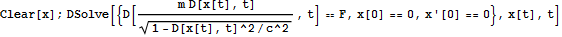
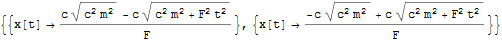
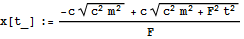
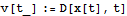
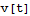
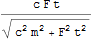
The velocity tends to the limit, c :
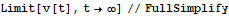
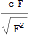

2. The (unrealistic) newtonian free fall.
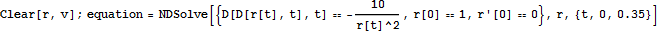
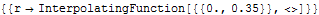
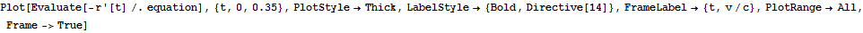
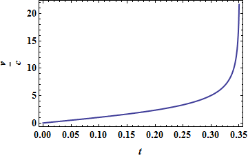

3. The relativistic free fall.
The center is fixed. The point is initially at rest a a distance r[0]=1 (M=10, 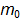=1, G=c=1, arbitrary units).
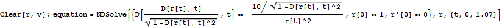
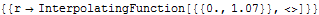

Position versus time :
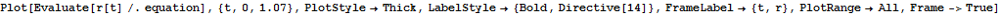
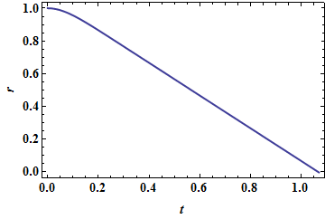

Velocity versus time :
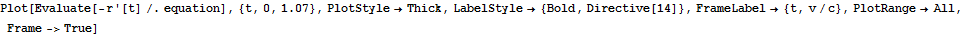
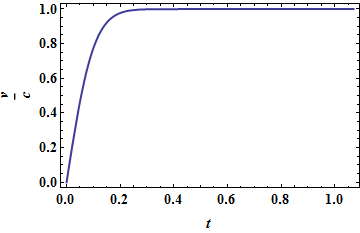